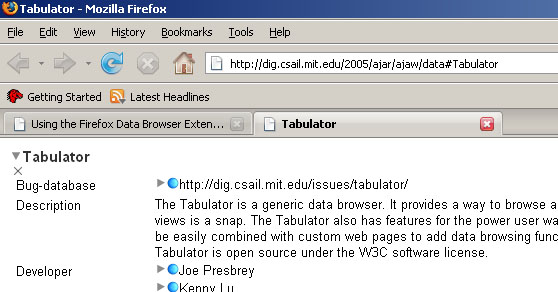
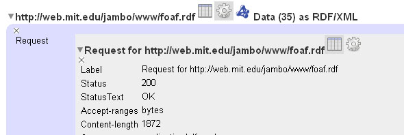
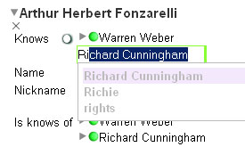
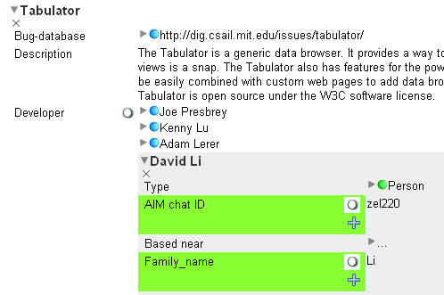
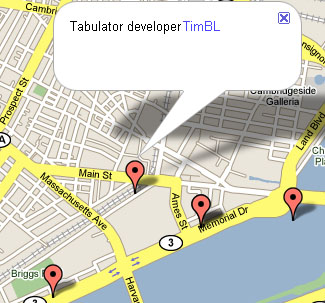

The Tabulator Extension is an extension for Firefox that provides a human-readable interface for linked data. It is based on the Tabulator, a web-based interface for browsing RDF. Using Tabulator's outline mode, query views, and back-end code, the Tabulator Extension integrates the browsing of linked data directly into the Firefox browser, making for a more natural and seamless experience when browsing linked data on the Web.
A primary goal of the Tabulator Extension is to explore how linked data could be displayed in the next generation of Web browsers. The Tabulator aims to make linked data human-readable by taking a document and picking out the actual things that the document describes. The properties of these things are the displayed in a table, and then the links in that table can be followed to load more data about other things in other documents.
Back To TopA link to the latest version of the extension can be found on the Tabulator Extension site: The Tabulator Extension. Once the extension file is downloaded, it should automatically install. After restarting Firefox, all documents served as application/rdf+xml and text/n3 (and for a while legacy documents served as text/rdf+n3) will be automatically loaded in the Tabulator's outline view. It may be necessary to disable other RDF-related extensions that could override the Tabulator's capture of these documents.
Back To Top
Once the Tabulator Extension is installed, simply loading a file that is served with mime type "application/rdf+xml" or "text/n3" will cause the document to be loaded in an outline view (try http://dig.csail.mit.edu/2005/ajar/ajaw/data#Tabulator).

Other "things" with properties can be picked out by the presence of an arrow next to their label.
Clicking on this arrow will expand the new "thing" to be displayed in an embedded outline.
Alternatively, shift-clicking on the arrow will redirect Firefox directly to the URI of the associated thing.
The series of icons at the top of the property table provide extra information about a "document", when one is loaded.
The gear icon will display the Tabulator's internal information about the currently displayed document.

The table icon will display the property table, and the N3 and RDF/XML buttons will display the document's data in their respective formats.
One addition in the extension that has not yet been seen in previous incarnations of the Tabulator is the ability to perform inline edits.
Now, it is possible to modify data and attempt to send a SPARQL update to the source of the file directly inside of the outline user interface.

A test editing space is set up at http://dig.csail.mit.edu/2007/wiki/. Instructions on creating a new document are located at that page.
To initialize an edit, press the enter key or click on an already selected object (Editing a predicate is not yet supported). Alternatively, one can add a new statement by pressing the + icon either at the bottom of the table or under a selected predicate. An autocomplete menu will indicate labels for things that the Tabulator is already aware of. To ignore this menu, press the escape key. When entering a value for a predicate or object, it is possible to enter a URI by surrounding it with angle brackets. For example, entering <http://web.mit.edu/jambo/www/foaf.rdf#jambo> will create a link to Tabulator developer James Hollenbach.
Back To TopHaving explored a bit by outline mode, you can then ask tabulator to query the web of data, to make a table of all the things which match the pattern you select. (Hence the name "Tabulator"). This is "query by example".
This is how it works. You first focus on a thing which will be the starting point for your query. That means you make sure it is top thing you are looking on in outline view. If it isn't, shift-click on its grey triangle to bring it to the top. For example, for a list of my friends, I would focuss on me and then select an example friend. For data about the events I have found in my browsing so far, I would focuss on the class "event" as a concept, and then in the list of actual events (folder icon), select an example event.
To select a field you click on it. Make sure you click on the left-hand side, the name of the field, not the value on the left-hand side.
You can select several fields with alt+click (on Mac) or shift+click (on Linux).
Each field will a column in the table you are making.
For example, the following selection will generate a query for all Tabulator developers with both an AIM chat ID and a family name listed:

If you want, say, a table of tabulator developers and their email addresses, and you are interested in AIM addresses if they have them but you want them whether or not they have them, then you mark the AIM-id field as optional. Click the a little white circle icon next to the field.
The list of previously generated queries is integrated into Firefox as a sidebar.
This list can be accessed in the Firefox menu under View > Sidebar > Data Browser Sidebar.
By highlighting an old query in the query list and pressing an activated view button, the query will be displayed in a new tab in the selected view (Table, Map, Calendar, or Timeline).

An error log for the Tabulator can be accessed under Tools > Data Browser Log.
A window displaying all of the sources currently loaded by the Tabulator can be accessed under View > Data Sources. The currently selected node's source document will be highlighted in yellow on the Data Sources page. Documents that have failed to load are highlighted in red.
Firefox can be made to explicitly request application/rdf+xml and text/n3 by selecting the option "Make Firefox request RDF" under Tools > Data Browser.
Back To TopPlease submit all bugs and feature requests to the Tabulator Issue Tracker.
Back To TopGeneral questions and discussion should be directed to the tabulator mailing list: tabulator at csail dot mit dot edu.
Back To Top